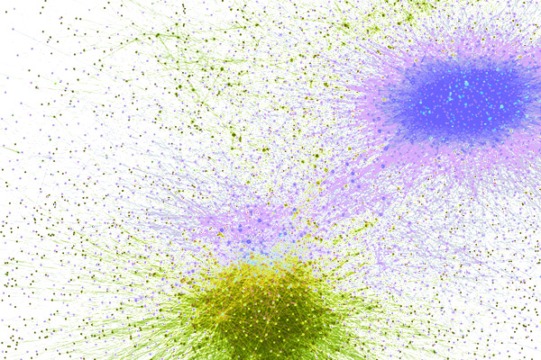

Coding
Featured Projects

Synthetic Data Generation with Large Language Models
Generation and evaluation of synthetic biological data represented as sparse matrices, using Large Langauge Models.
Interactive Particle System Projection
A particle system that interacts with the webcam, made of the icons of the members of my band, Long Stay Ultra Girls, to be projected during shows.
Pokemon Classifier
A classifier that predicts the type of a Pokémon based on its stat and a simple Pokémon battle simulation with the added twist that the type is the one predicted by the classifier.

Communities Analysis of NoVax and ProVax on Italian Twitter Users
Analysis of communities arising in the network constructed by the tweets of Italian users discussing Covid-19 vaccines in 2021.